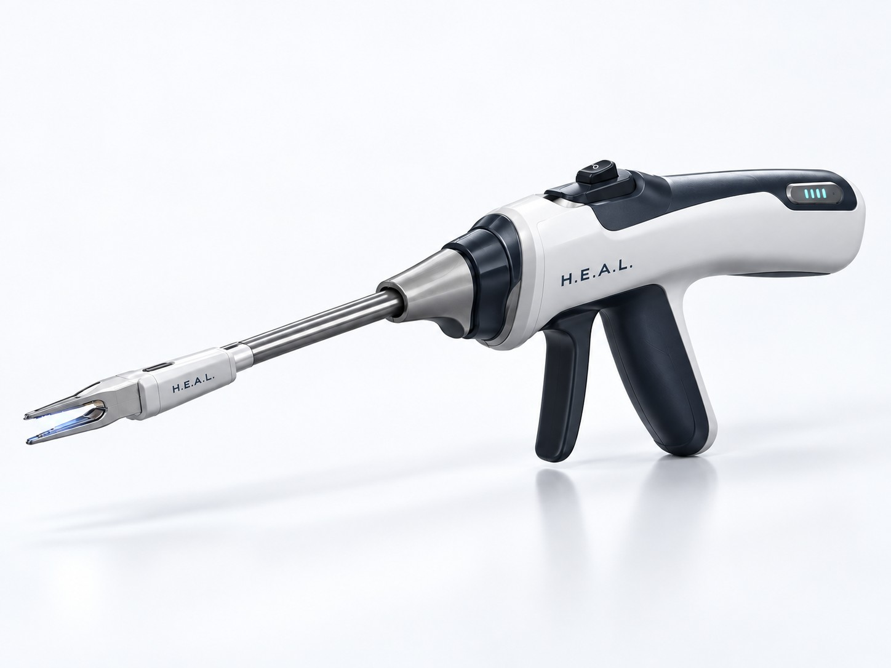
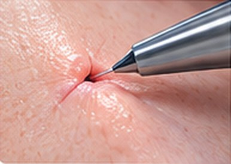
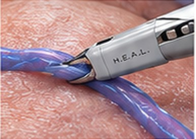
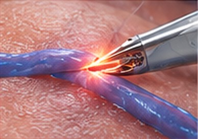
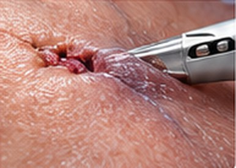
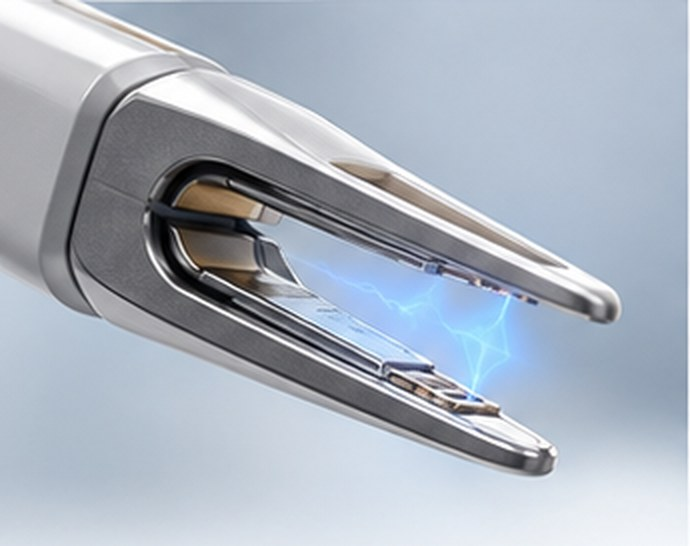

grasping platform
Precision grasping and bipolar coagulation in one surgical instrument.
H.E.A.L. is developing a handheld surgical platform that combines controlled tissue grasping with bipolar coagulation, simplifying hemostasis during ambulatory phlebectomy and other precision procedures.
Device under development. Not available for commercial sale in the United States. Regulatory clearance has not yet been obtained.

Clinical need
A common procedure with workflow challenges.
Ambulatory phlebectomy is a widely performed procedure that removes superficial varicose veins through small incisions. After vein extraction, hemostasis often requires additional instruments, an assistant, or compression, which interrupts workflow and adds procedure time.
Learn about chronic venous insufficiency →Traditional workflow
Grasp
Exchange instrument
Coagulate
Repeat
Multiple instruments, often a second pair of hands
H.E.A.L. workflow
Grasp
Coagulate
Continue
One instrument, one hand, no exchange
Product and technology
A modular platform designed for precision.
H.E.A.L. integrates a grasping mechanism with bipolar electrosurgical function in a compact handheld device. A rechargeable reusable handle pairs with single use, sterile tip cartridges designed for specific procedures.
1 · Bipolar grasping jaws
Atraumatic grasping with simultaneous bipolar coagulation.
2 · Disposable tip cartridge
Single use, sterile, with integrated bipolar electrodes.
3 · Single handed control
Intuitive control for grasping and energy delivery.
4 · Rechargeable reusable handle
Lightweight, ergonomic and durable for long term use.
Modular design
Reusable handle plus disposable tips.
Tip cartridges lock onto the handle with visual and tactile feedback. The modular architecture delivers precise bipolar energy while minimizing cost, complexity and reprocessing.
Tip configurations
Tip configurations shown are in development.
How it works
A streamlined approach to hemostasis.

Access
Make a small skin incision and access the target vein through a micro incision.

Grasp
Atraumatically grasp the vein with the integrated bipolar jaws.

Coagulate
Deliver controlled bipolar energy to seal the vein wall while still grasping.

Continue
Maintain hemostasis and proceed with extraction or move to the next target without exchanging instruments.
Initial application
Ambulatory phlebectomy, streamlined.
Ambulatory phlebectomy removes superficial varicose veins through small incisions, often in office based or outpatient settings. H.E.A.L. is designed to support hemostasis of extracted veins with the goal of simplifying the procedure and reducing instrument exchanges.
- Minimally invasive
- Suited to in office and ambulatory workflows
- Designed to reduce procedure time
- Atraumatic tissue handling
Potential applications
A platform with broader potential.
The underlying technology may have applications beyond ambulatory phlebectomy, wherever a procedure calls for precise grasping and coagulation.
Venous procedures
Phlebectomy of varicose, reticular and related superficial veins.
Vascular surgery
Precise grasping and sealing of small vessels in open procedures.
Dermatology
Controlled hemostasis for minor dermatologic procedures.
Office based procedures
A cordless instrument suited to clinics without a full OR setup.
Business model
Reusable platform. Recurring procedural revenue.
The modular design creates a durable installed base of reusable handles and a recurring revenue stream from single use, procedure specific tip cartridges across a range of venous procedures.
Reusable handle
Installed base, one time sale

Disposable tip cartridges
Recurring revenue, every case
Procedure volume
Growing venous and adjacent markets
Market opportunity
A large and growing procedural market.
Varicose veins and chronic venous disease are common, and ambulatory phlebectomy is widely performed in the United States. The platform also has potential in dermatology and other surgical specialties.
35%
of U.S. adults have chronic venous disease
$4–10B
spent each year by the U.S. healthcare system on chronic venous disease
$2.6B
projected global varicose vein treatment market by 2032
Expansion
into dermatology, vascular surgery and office based procedures
Market figures from H.E.A.L. research. Full citations available in the investor deck.
Development roadmap
Advancing toward regulatory submission.
Concept development
CompleteEngineering and production prototype
2026 · In progressVerification and validation
2026510(k) submission
PlannedFDA clearance
Target Q2 2027Limited market release
Q2 2027Full market release
Q4 2027H.E.A.L. is in development. Timeline and milestones are subject to change based on design progress, regulatory requirements and other factors.
Leadership
Physician driven. Patient focused.
H.E.A.L. is a medical device company developing surgical tools that address real clinical needs. Our team brings together a nationally recognized venous surgeon and engineers with experience in vascular device development and regulatory strategy.
Karl J. Pappas
Chief Technology Officer
BE in Biomedical Engineering. Experienced in FDA regulatory compliance, RF welding, injection molding and vascular device prototyping. Leads CAD design, regulatory compliance and technical development of the platform.
Peter Pappas, MD
Chief Medical Officer
30+ years in venous disease. NIH grant recipient. Past President of the American Venous Forum. Author of 100+ peer reviewed manuscripts. Provides clinical guidance and will be the first adopter.
Gavin Franzon
Chief Financial Officer
BS and MS in Biomedical Engineering. Directs financial modeling and resource allocation, and integrates commercial strategy with operational planning.
James Pappas
Chief Operating Officer
BE in Mechanical Engineering and MBA in project management. Oversees regulatory planning, consultant coordination and alignment of development with commercialization.
Company
Specialty devices for unmet clinical needs.
Our mission is to design specialty focused devices that solve unmet clinical needs, support medical professionals and raise the standard of care in surgical and clinical settings. H.E.A.L. is raising to carry the platform through 510(k) and first market release.
Contact
Partner with H.E.A.L.
We are seeking clinical collaborators, strategic partners and investors to help advance the development and commercialization of the H.E.A.L. platform.